메인 HERO
홈 맨 위 메인 배너 · PC 1920×790 · 모바일 750×1400
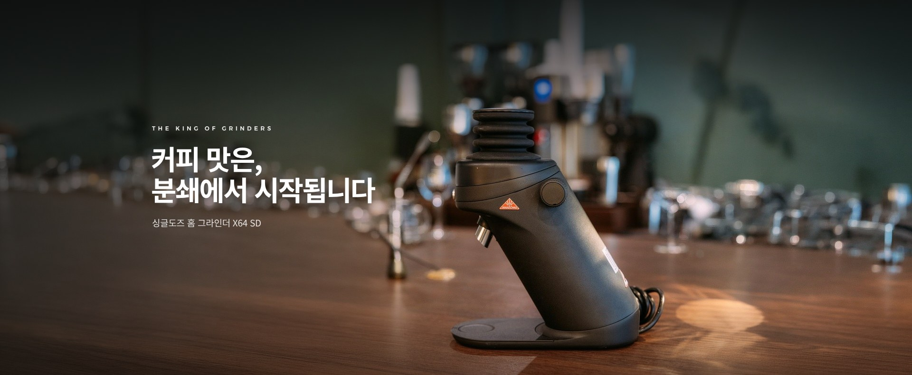
PC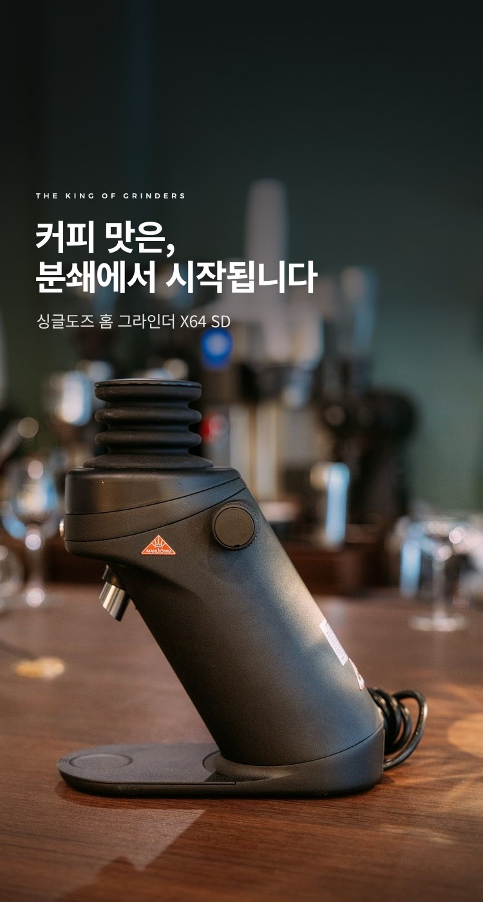
모바일홈 동영상
홈 위쪽 동영상 · PC·모바일 따로 등록
PC16:9 · 1920×1080 · 18.2초 · 6장면
0:00.0 / 0:18.2
모바일4:5 · 1080×1350 · 18.2초 · 6장면
0:00.0 / 0:18.2
카테고리 배너
카테고리 상단 배너 · PC 1920×400 · 모바일 750×360
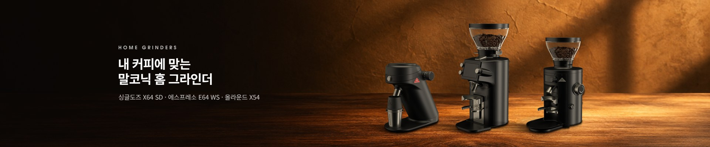
PC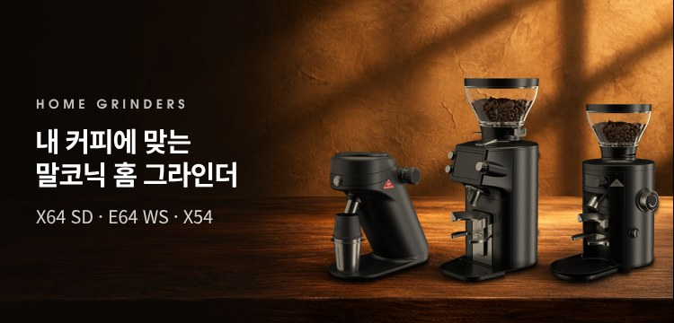
모바일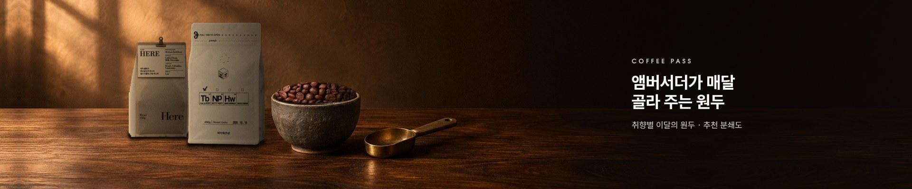
PC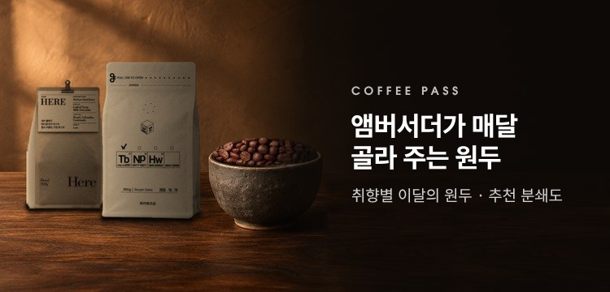
모바일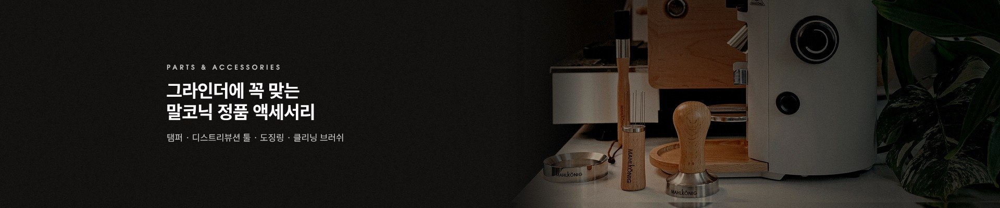
PC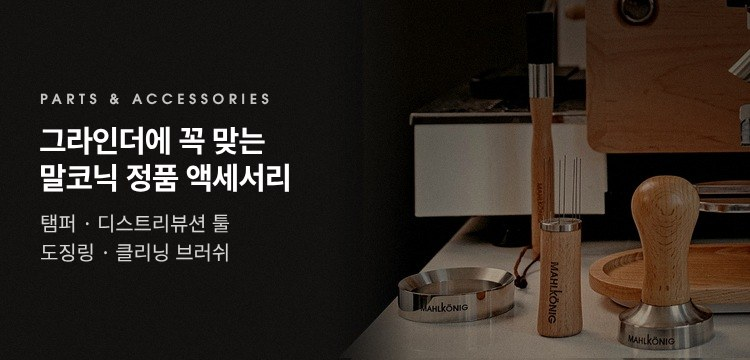
모바일SERVICE 띠배너
홈 띠배너 3종 · PC 2880×255 · 모바일 750×180
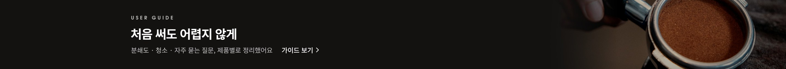
PC모바일
PC
모바일
PC
모바일
쇼핑스토리 X64 SD
본문 가로 848 · 이미지 10장 + 영상 1편(01 메인 바로 아래)
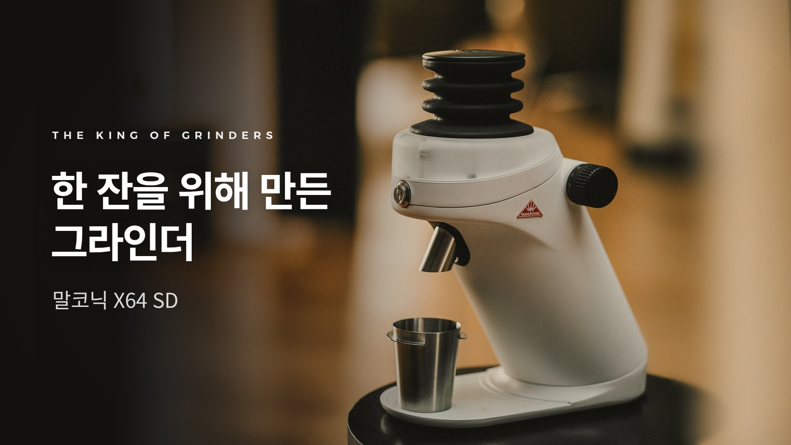
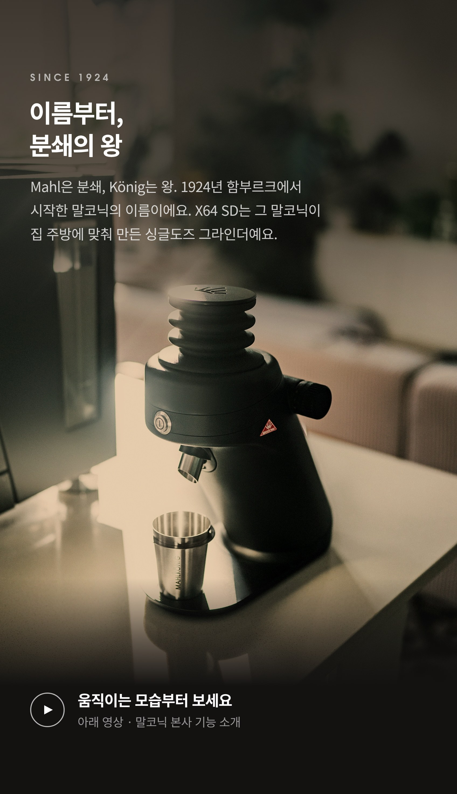
영상 · 16:9 · 21.0초
0:00.0 / 0:21.0
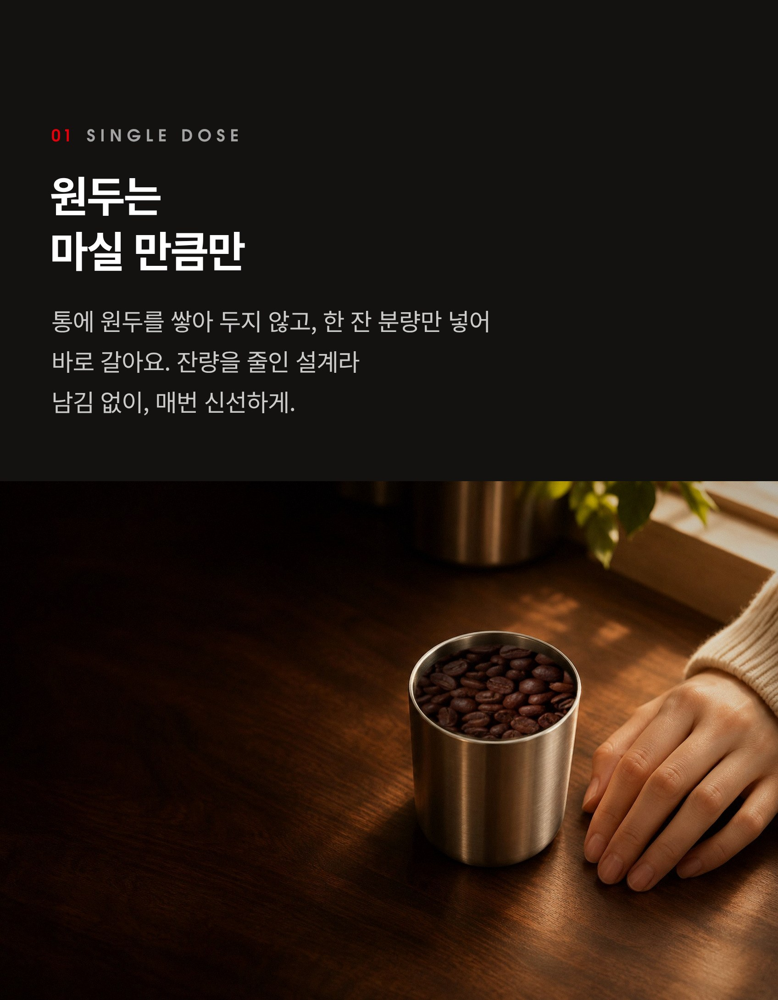
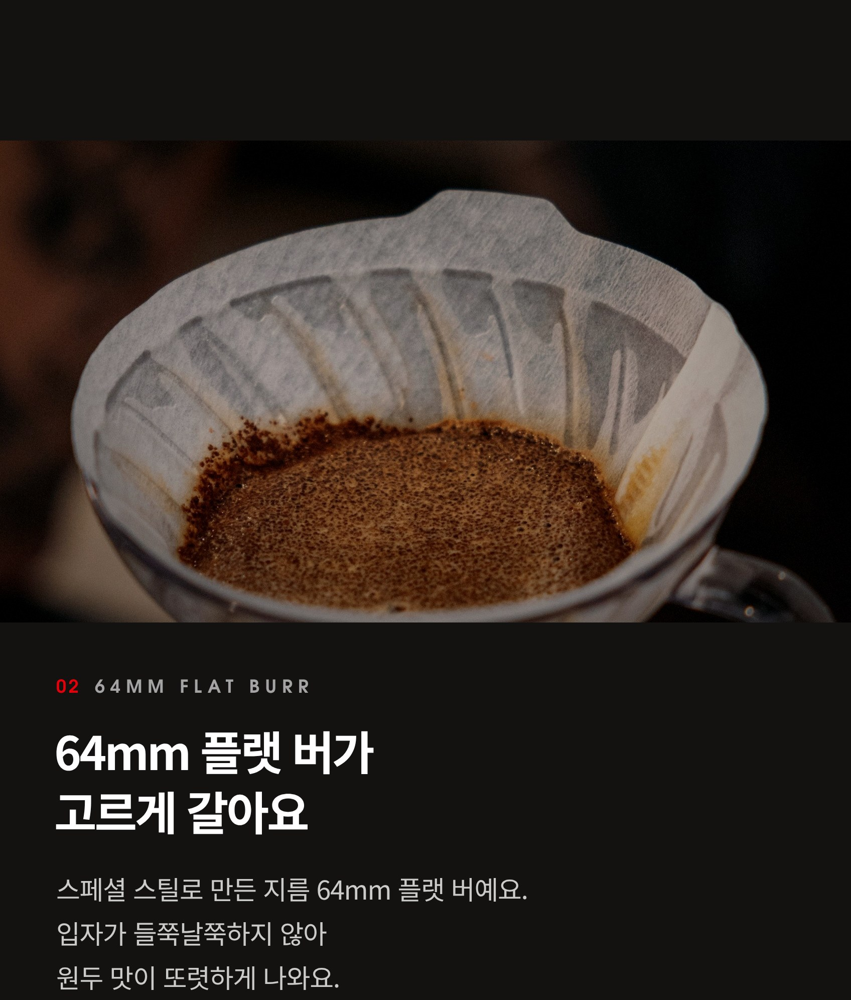
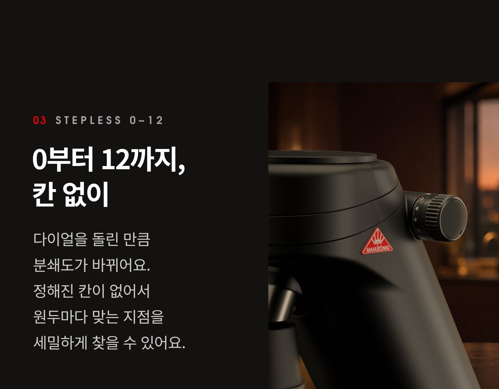
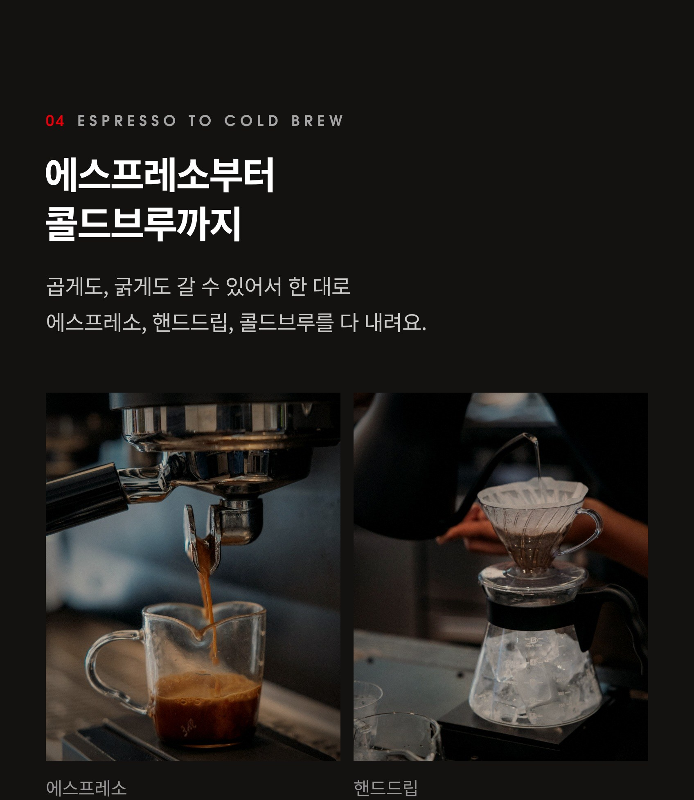
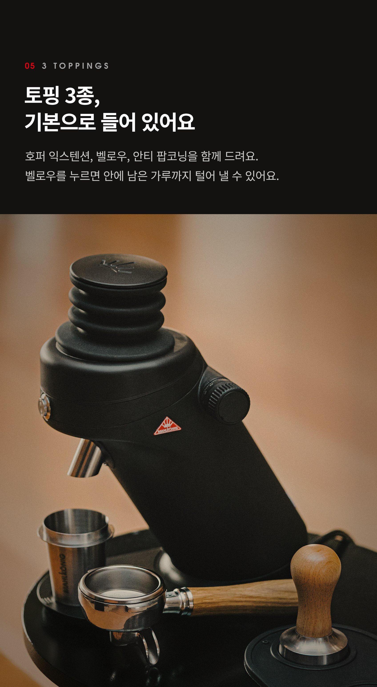
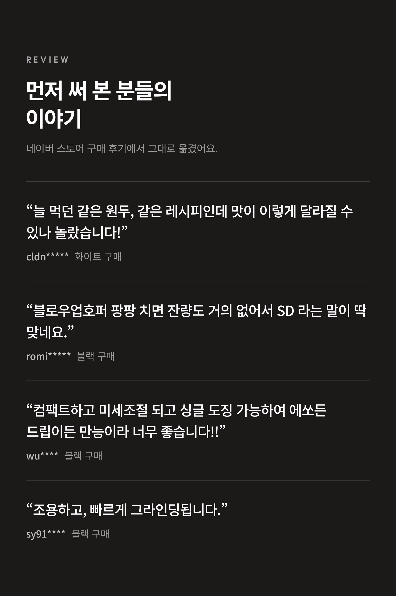
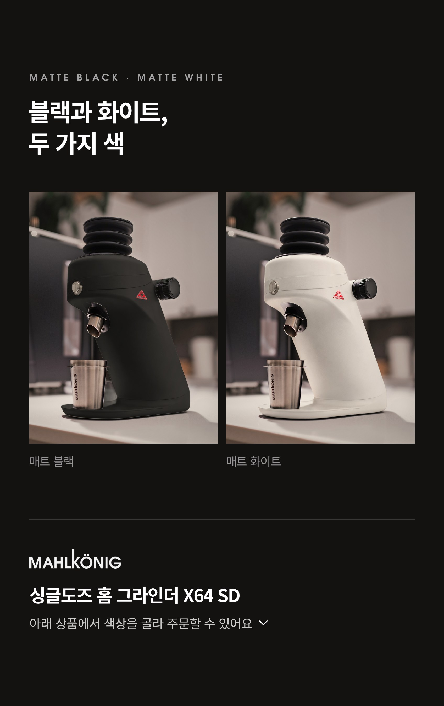